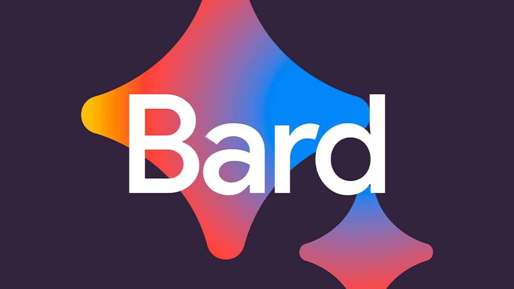
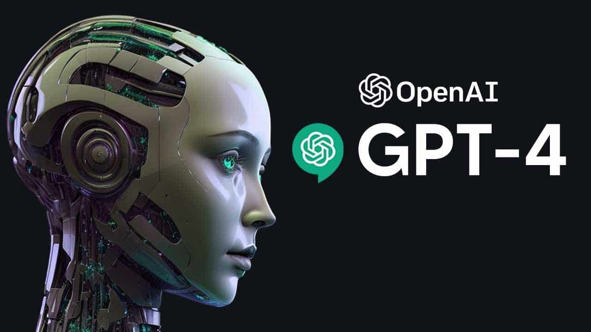

CONTATO
Bard a nova inteligência artificial do Google
(14 setembro 2023)
"O Bard é um marco importante na pesquisa de inteligência artificial", disse Jeff Dean, diretor
de
pesquisa do Google AI.
"É um modelo de linguagem poderoso que pode ser usado para uma variedade de tarefas, desde a
geração
de texto criativo até a tradução de idiomas.
Ainda estamos nos estágios iniciais de desenvolvimento, mas estamos entusiasmados com o
potencial do
Bard."
O Bard é treinado em um enorme conjunto de dados de texto e código, que inclui livros, artigos,
código-fonte e outros tipos de conteúdo.
Isso permite que o Bard entenda e responda a uma ampla gama de prompts e perguntas.
Apple lança óculos Apple Vision Pro, com foco em realidade aumentada

(7 abril 2023)
A Apple anunciou hoje o lançamento do óculos Apple Vision Pro, um novo dispositivo de realidade
aumentada (AR) que oferece uma experiência imersiva e envolvente.
O óculos Apple Vision Pro é um produto ambicioso que tem o potencial de mudar a forma como
interagimos com a tecnologia.
O dispositivo oferece uma experiência imersiva e envolvente que pode ser usada para uma
variedade de
propósitos.
Lançado o ChatGPT-4: A Próxima Geração da IA de Conversação
20 março 2023
OpenAI revelou o ChatGPT-4, a última iteração de sua tecnologia de conversação por IA.
O ChatGPT-4 oferece melhor compreensão contextual, requer menos instruções explícitas,
possui um conhecimento mais amplo e é aplicável em diversos setores, incluindo atendimento
ao
cliente e assistência médica.
A OpenAI também enfatiza a importância do treinamento responsável para garantir a segurança
e a
ética do sistema.
A disponibilidade do ChatGPT-4 por meio de APIs permitirá sua integração em várias
aplicações.
Isso marca um avanço significativo na IA e levanta questões sobre seu impacto na sociedade.